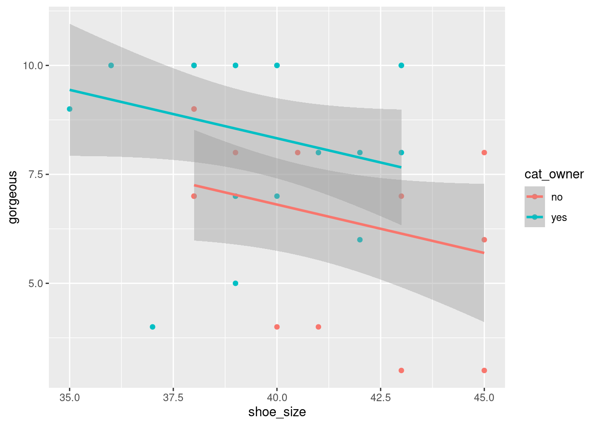
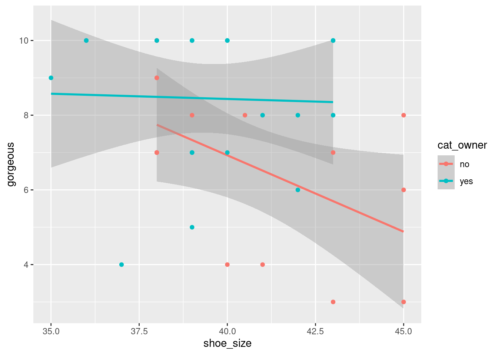

12 Другие виды предикторов и их комбинации
12.1 Категориальный предиктор
Можно построить регрессию \(y\) на одну категориальную переменную.
Давайте попробуем предсказать связь великолепности с наличием кошки (создадим для этого переменную “cat_owner”)
df$cat_owner <- ifelse(df$cats != 0, 'yes','no')
model_cat = lm(data=df, gorgeous~cat_owner)
summary(model_cat)##
## Call:
## lm(formula = gorgeous ~ cat_owner, data = df)
##
## Residuals:
## Min 1Q Median 3Q Max
## -4.4500 -1.4500 0.3333 1.5500 3.3333
##
## Coefficients:
## Estimate Std. Error t value Pr(>|t|)
## (Intercept) 6.6667 0.5285 12.613 3.59e-14 ***
## cat_owneryes 1.7833 0.6992 2.551 0.0156 *
## ---
## Signif. codes: 0 '***' 0.001 '**' 0.01 '*' 0.05 '.' 0.1 ' ' 1
##
## Residual standard error: 2.047 on 33 degrees of freedom
## Multiple R-squared: 0.1647, Adjusted R-squared: 0.1394
## F-statistic: 6.505 on 1 and 33 DF, p-value: 0.01558При наличии категориального предиктора R создает k-1 дамми-переменную, каждая из которых принимает значение 1 в своей категории и 0 во всех остальных.
То есть в случае с нашими кошками в данных существует две категории: “есть кошки” и “нет кошек”. Значит в регрессии будет одна дамми-переменная, которая равна единице, если кошки есть.
Смысл этого, возможно, будет более понятен из формул, но если что, про дамми можно почитать вот например здесь
В summary значения категорий приписываются к названию изначальной переменной – в нашем примере получилось “cat_owneryes”. Посмотрим еще раз как это выглядит в формуле:
\[\hat{y}_i = \beta_0 + \beta_1 x_i\] Помним, что \(x_i\) принимает значение 1 для кошатников и 0 для не-кошатников. Соответственно, для кошатников уравнение будет выглядеть так:
\(\hat{y}_i = \beta_0 + \beta_1 \cdot 1 \Leftrightarrow \hat{y}_i = \beta_0 + \beta_1\),
а для не-кошатников:
\(\hat{y}_i = \beta_0 + \beta_1 \cdot 0 \Leftrightarrow \hat{y}_i = \beta_0\)
Сами коэффициенты в выдаче интерпретируются так: средняя великолепность не-кошатников равна 6.6667 (intercept), а средняя великолепность кошатников на 1.7833 больше (1.7833 + 6.6667 = 8.45). Если обратить внимание на значимость, кошатники в среднем значимо более великолепны, чем не-кошатники.
Если же мы вставим в регрессию первоначальный предиктор про кошек, получится вот что:
model_cat2 = lm(data=df, gorgeous~cats)
summary(model_cat2)##
## Call:
## lm(formula = gorgeous ~ cats, data = df)
##
## Residuals:
## Min 1Q Median 3Q Max
## -4.3077 -1.5000 0.3333 1.5962 3.3333
##
## Coefficients:
## Estimate Std. Error t value Pr(>|t|)
## (Intercept) 6.6667 0.5489 12.145 4.13e-13 ***
## cats1 1.6410 0.8056 2.037 0.0506 .
## cats2 1.8333 1.1964 1.532 0.1359
## catsmore than 2 3.3333 2.1958 1.518 0.1395
## catsthis is too personal 1.8333 1.6004 1.146 0.2610
## ---
## Signif. codes: 0 '***' 0.001 '**' 0.01 '*' 0.05 '.' 0.1 ' ' 1
##
## Residual standard error: 2.126 on 30 degrees of freedom
## Multiple R-squared: 0.1809, Adjusted R-squared: 0.07164
## F-statistic: 1.656 on 4 and 30 DF, p-value: 0.1862И здесь все категории нужно интерпретировать по отдельности, в сравнении с базовой (в нашем случае базовая категория – 0 кошек).
Так например, люди с одной кошкой в среднем на 1.64 более великолепны, чем люди без кошек, и этот предиктор значим на уровне 0.1. А люди с двумя кошками на 1.83 более великолепны, чем люди без кошек, но разница между ними незначима.
ЗАДАЧКА
Постройте регрессию роста на переменную “выбор горячего напитка”. Какой напиток пьют самые высокие в среднем люди?

12.2 Количественный и категориальный предиктор вместе
Самый главный кайф регрессии в том, что в качестве предикторов можно засунуть много переменных сразу. Давайте для начала засунем две – “размер обуви” и “есть кошка”
model_num_cat <- lm(data=df, gorgeous ~ shoe_size + cat_owner)
summary(model_num_cat)##
## Call:
## lm(formula = gorgeous ~ shoe_size + cat_owner, data = df)
##
## Residuals:
## Min 1Q Median 3Q Max
## -4.995 -1.439 0.339 1.450 2.748
##
## Coefficients:
## Estimate Std. Error t value Pr(>|t|)
## (Intercept) 15.6980 5.4616 2.874 0.00714 **
## shoe_size -0.2223 0.1338 -1.661 0.10648
## cat_owneryes 1.5203 0.6994 2.174 0.03724 *
## ---
## Signif. codes: 0 '***' 0.001 '**' 0.01 '*' 0.05 '.' 0.1 ' ' 1
##
## Residual standard error: 1.995 on 32 degrees of freedom
## Multiple R-squared: 0.231, Adjusted R-squared: 0.1829
## F-statistic: 4.805 on 2 and 32 DF, p-value: 0.01497Судя по выдаче, предиктор “размер обуви” перестал быть значимым совсем, то есть изменение размера обуви на единицу никак не сказывается на изменении великолепности.
В то же время люди, имеющие кошек, по-прежнему значимо более великолепны, чем не имеющие кошек.
А вот как наши точки и регрессионные прямые будут выглядеть на графике:

Это параллельные регрессионные прямые. Они отличаются только на параметр \(\beta_0\)
Чтобы разрешить прямым не быть параллельными, можно добавить взаимодействие!
Формула внутри lm поменяется: между предикторами будет не плюс, а умножение:
model_inter_cut <- lm(data=df, gorgeous ~ shoe_size * cat_owner)
summary(model_inter_cut)##
## Call:
## lm(formula = gorgeous ~ shoe_size * cat_owner, data = df)
##
## Residuals:
## Min 1Q Median 3Q Max
## -4.519 -1.449 0.665 1.509 3.120
##
## Coefficients:
## Estimate Std. Error t value Pr(>|t|)
## (Intercept) 23.2932 7.5061 3.103 0.00406 **
## shoe_size -0.4092 0.1843 -2.220 0.03386 *
## cat_owneryes -13.7388 10.5583 -1.301 0.20277
## shoe_size:cat_owneryes 0.3812 0.2632 1.448 0.15757
## ---
## Signif. codes: 0 '***' 0.001 '**' 0.01 '*' 0.05 '.' 0.1 ' ' 1
##
## Residual standard error: 1.961 on 31 degrees of freedom
## Multiple R-squared: 0.2797, Adjusted R-squared: 0.21
## F-statistic: 4.013 on 3 and 31 DF, p-value: 0.01597Коэффициентов стало уже даже больше, чем переменных!
Давайте по порядку. Размер обуви снова стал значимым. Но не для всех! Только для группы не-кошатников. Среди не-кошатников увеличение размера обуви на единицу связано со снижением великолепности на 0.4.
Следующий предиктор – наличие кошки. Это дополнительный интерсепт для кошатников. Он означает, что их личная регрессионная прямая будет выходить из точки на 13 единиц ниже. Другими словами, это разница между кошатниками и не-кошатниками с нулевым размером обуви (в нашем случае незначимая).
Регрессионная прямая у кошатников тоже будет личная, ее наклон будет таким: -0.41 + 0.38 = -0.03 (коэфф. не-кошатников плюс коэфф. кошатников). То есть личная линия кошатников будет практически параллельна оси икс.
Проверим на картинке:

Всё как мы и предсказывали! Личная линия кошатников (синяя) начинается ниже линии не-кошатников (если мысленно продлить обе линии влево до нуля по оси икс), и при этом она более пологая.
Красная же линия, наоборот, получилась более наклонной, чем в регрессии без взаимодействия, и во всей регрессионной модели только один этот наклон оказался значимым (ну и еще интерсепт не-кошатников).
Вспомним, что когда мы строили регрессию на всей выборке, мы получили значимую отрицательную взаимосвязь между размером обуви и великолепностью. Теперь, посмотрев на регрессионные прямые внутри групп, можем сделать вывод, что тот отрицательный эффект был обусловлен только не-кошатниками, в группе кошатников он не выявляется.
ЗАДАЧКА
Проверьте связь между великолепностью и размером обуви для групп: 0 или 1 родственник vs. 2 и более родственников. В какой группе связь положительная? Насколько именно увеличится великолепность с увеличением размера обуви на 1?
У людей, которые имеют больше одного брата или сестры, великолепность увеличивается вместе с размером обуви примерно на 0.3.

Поздравляю! Это почти совсем всё про регрессии!
12.3 Два количественных предиктора
Ну и наконец мы можем добавить в регрессию два (а то и больше!) количественных предикторов. Давайте попробуем предсказать размер обуви по длине волос и росту.
model_num <- lm(data=df, shoe_size ~ hair_length + height)
summary(model_num)##
## Call:
## lm(formula = shoe_size ~ hair_length + height, data = df)
##
## Residuals:
## Min 1Q Median 3Q Max
## -4.1670 -0.6979 -0.2558 1.0798 2.7713
##
## Coefficients:
## Estimate Std. Error t value Pr(>|t|)
## (Intercept) 0.69847 6.74704 0.104 0.9182
## hair_length -0.04672 0.02327 -2.008 0.0534 .
## height 0.23489 0.03788 6.200 6.95e-07 ***
## ---
## Signif. codes: 0 '***' 0.001 '**' 0.01 '*' 0.05 '.' 0.1 ' ' 1
##
## Residual standard error: 1.468 on 31 degrees of freedom
## (1 observation deleted due to missingness)
## Multiple R-squared: 0.6789, Adjusted R-squared: 0.6582
## F-statistic: 32.78 on 2 and 31 DF, p-value: 2.251e-08Ура, снова нормальное количество коэффициентов :)
Проинтерпретируем же их:
при увеличении длины волос на сантиметр размер обуви в среднем уменьшается на 0.047 при фиксированном значении роста. То есть среди людей с одинаковым ростом те, у кого длиннее волосы, будут в среднем иметь чуть меньший размер обуви. Эта связь очень слабо значима, только на уровне 0.1
при увеличении роста на сантиметр размер обуви в среднем увеличивается на 0.23 при фиксированном значении длины волос. Эта связь значима на уровне 0.001; другими словами, размер обуви сильно связан с ростом
Ну и напоследок:
ФИНАЛЬНАЯ ЗАДАЧЕЧКА
Загрузите по ссылкам два датесета:
dfmale <- read.csv(‘https://people.sc.fsu.edu/~jburkardt/datasets/triola/mhealth.csv’)
dffemale <- read.csv(‘https://people.sc.fsu.edu/~jburkardt/datasets/triola/fhealth.csv’)
Это два датасета с результатами прохождения медицинского обследования для мужчин и женщин. В них одинаковые по смыслу колонки, но с немного разными названиями. Первая колонка – это просто айди каждого человека.
Для начала придумайте, как их вертикально склеить. Затем попробуйте найти модель, которая с наилучшим R-квадратом будет предсказывать, например, уровень холестерина. Финальную модель проверьте на нормальность остатков.

До встречи на хакатоне!